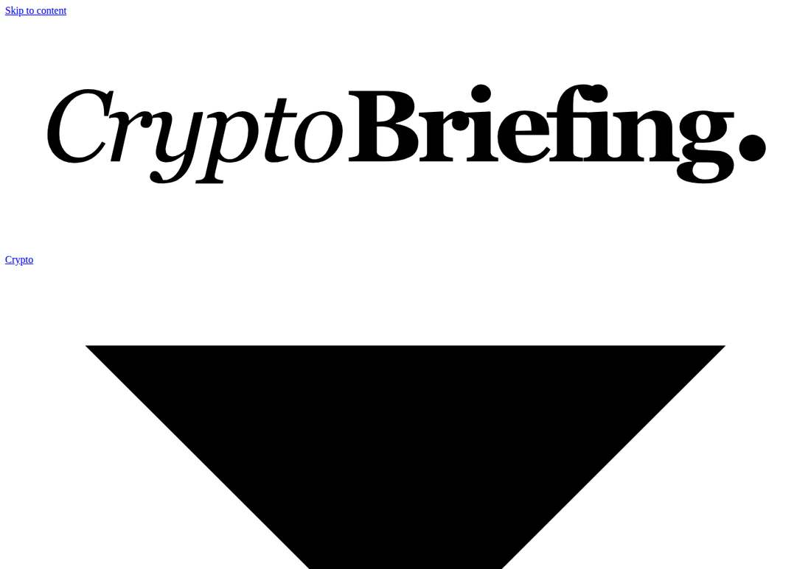

DeepSeek Raises Another $15 Billion, but Compute Runs Short First
DeepSeek used a $15 billion round to push its valuation to a new high, buying the right to keep burning compute.
- 01THE ROUND — The second round closes, led by Tencent and CATL.
- 02THE SURGE — V4.1 Flash takes the top spot on OpenRouter by global volume, with demand far outpacing capacity growth.
- 03THE SQUEEZE — From November 15, free chat throttles: long chats stop resuming, single inputs are capped, a daily quota goes in.
WHAT HAPPENEDWhat Happened
First reported by Caixin, DeepSeek has closed its second external funding round, about 100 billion yuan, at a post-money valuation of about $86 billion. The industrial and commercial registration change was completed on November 17. Thirty-one new investors joined, led by Tencent and CATL, with a fund linked to China Mobile among them, lifting the state-linked share to about 27%.
Tencent put in another 10 billion yuan this round, matching its first round, for a cumulative 20 billion yuan. CATL founder Robin Zeng also invested personally. The previous round closed in June this year at about 51 billion yuan. In five months, the valuation rose about 70%, and the company plans to list on Shanghai's STAR Market.
The other side of the funding news is a compute crunch. OpenRouter data shows V4.1 Flash processed 33.6 trillion tokens in the week of October 19 to 25, up 801% week on week, taking the top spot globally by volume. From November 15, users began seeing capacity warnings: long chats idle for more than seven days cannot be resumed, single inputs are capped at about 40,000 characters, and a daily message quota was added. DeepSeek's official status page shows eight service outages since October.
WHY IT MATTERSDemand Is Outrunning Capacity, and Throttling Is Arithmetic
V4.1 Flash's demand curve is nearly vertical. From late July to early August it processed about 7.22 trillion tokens a week; in under three months that more than quadrupled. DeepSeek's own compute expansion cannot keep up: capacity at its 1 GW data centre in Inner Mongolia will only truly land between late 2027 and early 2028.
The cuts fall on free users. Resuming idle long chats was cut because idle conversations hold KV cache, squeezing the memory available to active users. The company has published no throttling rules or recovery timetable; users can only infer their quota from the prompts in the interface.
WHAT TO WATCHThe Valuation Figures Differ by Source, So Watch the Basis
Caixin's round size is slightly below The Information's 105.5 billion yuan, about $15.8 billion, with a valuation of 615.5 billion yuan. The two differ on timing and exchange-rate conversion; post-money valuations both sit around $85 billion.
The shareholder structure is the more telling part. Tencent holds 9.57%, three CATL-linked funds together hold the same, and China Mobile's investment arm and CITIC Securities each hold 7.65%. The state-linked share keeps rising: DeepSeek has gone from a lab incubated by a quant fund to half a national team.
THE SHIFTWhat Changed
SIGNAL JUDGMENT — ANALYSISAn $86 Billion Valuation, and the Bottleneck Is Power and Chips, Not Money
Tokenta Signal's judgment: DeepSeek used a $15 billion round to push its valuation to a new high, buying the right to keep burning compute. Free chat has already started throttling, and the capacity the money can buy does not land until late 2027, so the gap in between is the real test.
WHAT REMAINS UNCERTAINWhat Remains Uncertain
EVIDENCEEvidence

First reported by Caixin, DeepSeek's second round is about 100 billion yuan at a post-money valuation of about $86 billion, with 31 new investors including Tencent and CATL. At the same time, V4.1 Flash demand surged and free chat began throttling for lack of compute.
PRIMARY SOURCESPrimary Sources
- Crypto Briefing: DeepSeek founder Liang Wenfeng's fortune climbs to an estimated $55 billion after new raise
https://cryptobriefing.com/deepseek-founder-wealth-55-billion/ - iMasters: DeepSeek API: usage limits and capacity crisis
https://imasters.com/news/deepseek-restricts-long-chats-and-limits-api-usage-over-capacity-shortage